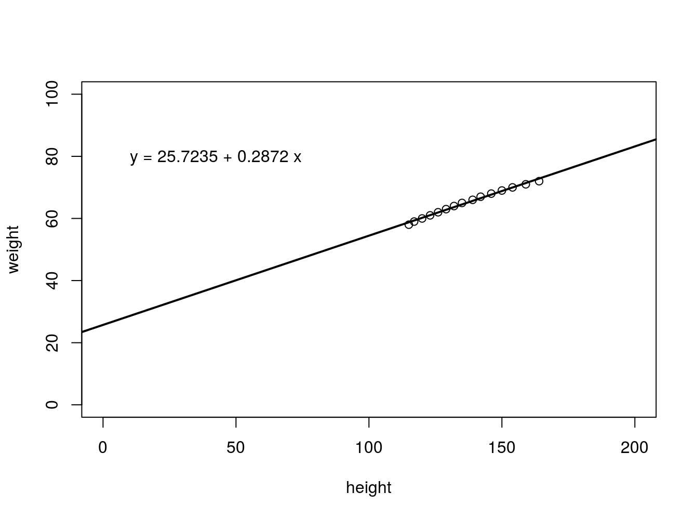
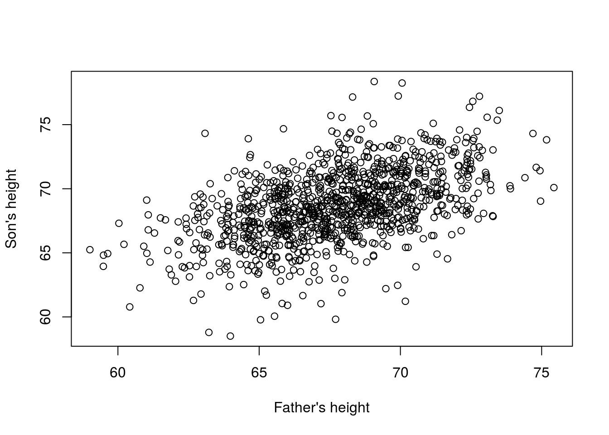
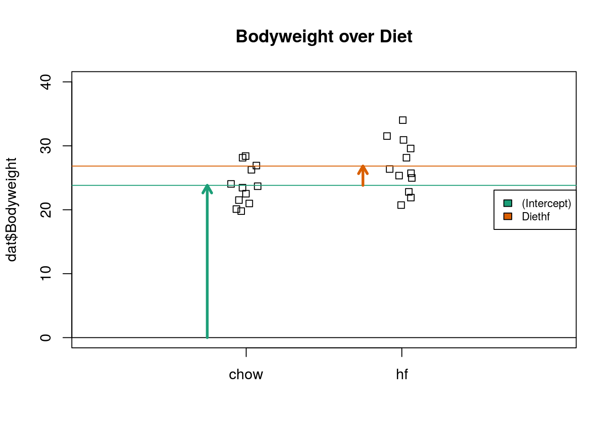

9 Linear models and matrix algebra
9.1 Linear models
We will start with simple linear functions.
First Example Height and Weight correlation
people <- read.csv("data/Linear_models/people.csv", header=F)
caption = 'Height and weight correlation of people in USA.'
plot(people$V2 ~ people$V3, ylab="weight", xlab="height", xlim=c(0,200), ylim=c(0,100))
knitr::kable(
head(people[, 1:3], 15), booktabs = TRUE,
caption = 'A table of height and weight correlation.'
)| V1 | V2 | V3 |
|---|---|---|
| 1 | 58 | 115 |
| 2 | 59 | 117 |
| 3 | 60 | 120 |
| 4 | 61 | 123 |
| 5 | 62 | 126 |
| 6 | 63 | 129 |
| 7 | 64 | 132 |
| 8 | 65 | 135 |
| 9 | 66 | 139 |
| 10 | 67 | 142 |
| 11 | 68 | 146 |
| 12 | 69 | 150 |
| 13 | 70 | 154 |
| 14 | 71 | 159 |
| 15 | 72 | 164 |
Hypothesis
\[ h_{\theta}(x) = \theta_{(0)} + \theta_{(1)}x \]
How do we evaluate? \[\theta_{(i's)}\] Let us assume \(\theta_{(0)}\) = 25 and \(\theta_{(1)}\) = 0
or
Let us assume \(\theta_{(0)}\) = 0 and \(\theta_{(1)}\) = -100
Our hope is that the hypothesis \(h(x)\) accounts for all of the data with minimal error.
Mathematically:
We are tying to minimise \(\theta_{(0)}\) and \(\theta_{(1)}\)
or minimisation of
\[ (h_{\theta}(x) - y)^2 \] When done for all elements in the matrix it is called the Cost Function.
\[ \begin{equation*} 1/2n\sum_{i=1}^{n} (h_{\theta}(x^i) - y^i)^2 \end{equation*} \] where \(h_{\theta}(x^i)\) = \(\theta_{0} + \theta_{1x^i}\)
The Cost Function \[ \begin{equation*} CF(\theta_{0},\theta_{1}) = 1/2n\sum_{i=1}^{n} (h_{\theta}(x^i) - y^i)^2 \end{equation*} \] Cost Function is also called the Squard Error Function
Our training data set is a scatter plot in the x-y plane and the straight line or hypothesis defined by \(hθ(x)\) has to pass through most of these points and the best possible line will have the least average squared vertical distances from the line.
When that happens the value of \(CF(\theta_{0},\theta_{1})\) will be 0.
people <- read.csv("data/Linear_models/people.csv", header=F)
caption = 'Height and weight correlation of people in USA.'
plot(people$V2 ~ people$V3, ylab="weight", xlab="height", xlim=c(0,200), ylim=c(0,100))
fit <- lm(people$V2 ~ people$V3)
abline(fit$coef,lwd=2)
b <- round(fit$coef,4)
text(10, 80, paste("y =", b[1], "+", b[2], "x"), adj=c(0,0.5))
Second Example Falling of an object
library(UsingR)## Loading required package: MASS## Loading required package: HistData## Loading required package: Hmisc## Loading required package: lattice## Loading required package: survival## Loading required package: Formula## Loading required package: ggplot2##
## Attaching package: 'Hmisc'## The following objects are masked from 'package:base':
##
## format.pval, units##
## Attaching package: 'UsingR'## The following object is masked from 'package:survival':
##
## cancerlibrary(rafalib)
set.seed(1)
g <- 9.8 ##meters per second
n <- 25
tt <- seq(0,3.4,len=n) ##time in secs, note: we use tt because t is a base function
d <- 56.67 - 0.5*g*tt^2 + rnorm(n,sd=1) ##meterslibrary(rafalib)
mypar()
plot(tt,d,ylab="Distance in meters",xlab="Time in seconds")
This data looks like it might follow the equation
\[ Y_i = \theta_0 + \theta_1 x_i + \theta_2 x_i^2 + \varepsilon_i, i=1,\dots,n \] With \(Y_i\) representing location, \(x_i\) representing the time, and \(\varepsilon_i\) accounting for measurement error. This is still a linear model because it is a linear combination of known quantities (the \(x\)’s) referred to as predictors or covariates and unknown parameters (the \(\theta\)’s).
Third Example Father and son height correlation
data(father.son,package="UsingR")
x=father.son$fheight
y=father.son$sheight
plot(x,y,xlab="Father's height",ylab="Son's height") \[ Y_i = \theta_0 + \theta_1 x_i + \varepsilon_i, i=1,\dots,N \] This is also a linear model with \(x_i\) and \(Y_i\), the father and son heights respectively, for the \(i\)-th pair and \(\varepsilon_i\) a term to account for the extra variability. Here we think of the fathers’ heights as the predictor and being fixed (not random) so we use lower case. Measurement error alone can’t explain all the variability seen in \(\varepsilon_i\). This makes sense as there are other variables not in the model, for example, mothers’ heights, genetic randomness, and environmental factors
Fourth Example Mouse diet data
Here we read-in mouse body weight data from mice that were fed two different diets: high fat and control (chow). We have a random sample of 12 mice for each. We are interested in determining if the diet has an effect on weight.
library(downloader)
url <- "https://raw.githubusercontent.com/genomicsclass/dagdata/master/inst/extdata/femaleMiceWeights.csv"
filename <- "femaleMiceWeights.csv"
if (!file.exists(filename)) download(url,destfile=filename)dat <- read.csv("femaleMiceWeights.csv")
mypar(1,1)
stripchart(Bodyweight~Diet,data=dat,vertical=TRUE,method="jitter",pch=1,main="Mice weights")
We can estimate the difference in average weight between populations using a linear model of the form.
\[ Y_i = \theta_0 + \theta_1 x_{i} + \varepsilon_i\] with \(\theta_0\) the chow diet average weight, \(\theta_i\) the difference between averages, \(x_i = 1\) when mouse \(i\) gets the high fat (hf) diet, \(x_i = 0\) when it gets the chow diet, and \(\varepsilon_i\) explains the differences between mice of the same population.
Linear models in general
We have seen four very different examples in which linear models can be used. A general model that encompasses all of the above examples is the following:
\[ h_{\theta}(x) = \theta_0 + \theta_1 x_{i,1} + \theta_2 x_{i,2} + \dots + \theta_2 x_{i,p} + \varepsilon_i, i=1,\dots,n \]
\[ h_{\theta}(x) = \theta_0 + \sum_{j=1}^p \theta_j x_{i,j} + \varepsilon_i, i=1,\dots,n \]
Note that we have a general number of predictors \(p\). Matrix algebra provides a compact language and mathematical framework to compute and make derivations with any linear model that fits into the above framework.
Therefore most inear models are typically described in matrix algebra framework.
9.2 Matrix algebra
The function matrix creates matrices matrix (data, nrow, ncol, byrow)
Matrix fills values by columns
seq1 <- seq(1:6)
m1 <- matrix(seq1, 2)
m1## [,1] [,2] [,3]
## [1,] 1 3 5
## [2,] 2 4 6You can also fill it by rows
m2 <- matrix(seq1, 2, byrow = T)
m2## [,1] [,2] [,3]
## [1,] 1 2 3
## [2,] 4 5 6Creating a matrix of 20 numbers from a standard normal distribution
m3 <- matrix(rnorm(20), 4)
m3## [,1] [,2] [,3] [,4] [,5]
## [1,] -0.0593134 -0.2533617 -0.7074952 0.8811077 -1.1293631
## [2,] 1.1000254 0.6969634 0.3645820 0.3981059 1.4330237
## [3,] 0.7631757 0.5566632 0.7685329 -0.6120264 1.9803999
## [4,] -0.1645236 -0.6887557 -0.1123462 0.3411197 -0.3672215appending a vector to a matrix
v1 <- c(1, 5, 7, 8)
m4 <- cbind(m3, v1)
m4## v1
## [1,] -0.0593134 -0.2533617 -0.7074952 0.8811077 -1.1293631 1
## [2,] 1.1000254 0.6969634 0.3645820 0.3981059 1.4330237 5
## [3,] 0.7631757 0.5566632 0.7685329 -0.6120264 1.9803999 7
## [4,] -0.1645236 -0.6887557 -0.1123462 0.3411197 -0.3672215 8v2 <- c(1:6)
m5 <- rbind(m4, v2)
m5## v1
## -0.0593134 -0.2533617 -0.7074952 0.8811077 -1.1293631 1
## 1.1000254 0.6969634 0.3645820 0.3981059 1.4330237 5
## 0.7631757 0.5566632 0.7685329 -0.6120264 1.9803999 7
## -0.1645236 -0.6887557 -0.1123462 0.3411197 -0.3672215 8
## v2 1.0000000 2.0000000 3.0000000 4.0000000 5.0000000 6Determining the dimension of a matrix
dim(m5)## [1] 5 6m6 <- matrix(1:6, 2)
m6## [,1] [,2] [,3]
## [1,] 1 3 5
## [2,] 2 4 6m7 <- matrix(c(rep(1, 3), rep(2, 3)), 2, byrow = T)
m7## [,1] [,2] [,3]
## [1,] 1 1 1
## [2,] 2 2 2Matrix addition
m6+m7## [,1] [,2] [,3]
## [1,] 2 4 6
## [2,] 4 6 8Matrix subtraction
m6-m7## [,1] [,2] [,3]
## [1,] 0 2 4
## [2,] 0 2 4Matrix inverse
\[ \begin{align} X &= \begin{bmatrix}a& b \\ c & d\\ \end{bmatrix}\\\\ X^{-1} &= \dfrac{1}{(ad-bc)}\begin{bmatrix} d& -b\\ -c & a\\ \end{bmatrix} \end{align} \]
m8 <- matrix(1:4, 2)
m8## [,1] [,2]
## [1,] 1 3
## [2,] 2 4R function for inv matrix
solve(m8)## [,1] [,2]
## [1,] -2 1.5
## [2,] 1 -0.5Matrix transpose \[ \begin{align} X &= \begin{bmatrix}a& b \\ c & d\\ \end{bmatrix}\\\\ X^{T} &= \begin{bmatrix} a& c\\ b & d\\ \end{bmatrix} \end{align} \] R function for matrix transpose
t(m7)## [,1] [,2]
## [1,] 1 2
## [2,] 1 2
## [3,] 1 2Matrix multiplication
Element-wise multiplication
m6 * m7## [,1] [,2] [,3]
## [1,] 1 3 5
## [2,] 4 8 12Cross product
m6 %*% t(m7)## [,1] [,2]
## [1,] 9 18
## [2,] 12 24Matrices are not commutative: A∗B≠B∗A Matrices are associative: (A∗B)∗C=A∗(B∗C)
Identity matrix (I)
The identity matrix, when multiplied by any matrix of the same dimensions, results in the original matrix. It’s just like multiplying numbers by 1. The identity matrix simply has 1’s on the diagonal (upper left to lower right diagonal) and 0’s elsewhere.
\[ \begin{bmatrix}1& 0& 0 \\ 0& 1& 0 \\ 0& 0& 1 \end{bmatrix}\\\\ \] \(AA^{-1} = I\)
Estimating parameters \(\theta\)
For the models above to be useful we have to estimate the unknown \(\theta\)s. In the second example, we want to describe a physical process for which we can’t have unknown parameters. In the third example, we better understand inheritance by estimating how much, on average, the father’s height affects the son’s height. In the fourth example, we want to determine if there is in fact a difference: if \(\theta_1 \neq 0\).
As explained above, we have to find the values that minimize the distance of the fitted model to the data. We come back to Cost Function.
\[ \sum_{i=1}^n \left( Y_i - \left(\theta_0 + \sum_{j=1}^p \theta_j x_{i,j}\right)\right)^2 \]
Once we find the minimum, we will call the values the least squares estimates (LSE) and denote them with \(\hat{\theta}\). The quantity obtained when evaluating the least squares equation at the estimates is called the residual sum of squares (RSS). Since all these quantities depend on \(Y\), they are random variables. The \(\hat{\theta}\) s are random variables and we will eventually perform inference on them.
What actually happens when we invoke lm? Inside of lm, we will form a design matrix \(\mathbf{X}\) and calculate the Cost function: \(\boldsymbol{\beta}\), which minimizes the sum of squares. The formula for this solution is:
\[ \hat{\boldsymbol{\beta}} = (\mathbf{X}^\top \mathbf{X})^{-1} \mathbf{X}^\top \mathbf{Y} \] We can calculate this in R using matrix multiplication operator %*%, the inverse function solve, and the transpose function t.
Getting back to the mice example
set.seed(1) #same jitter in stripchartdat <- read.csv("femaleMiceWeights.csv") ##previously downloaded
stripchart(dat$Bodyweight ~ dat$Diet, vertical=TRUE, method="jitter",
main="Bodyweight over Diet") We can see that the high fat diet group appears to have higher weights on average, although there is overlap between the two samples.
We can see that the high fat diet group appears to have higher weights on average, although there is overlap between the two samples.
levels(dat$Diet)## [1] "chow" "hf"X <- model.matrix(~ Diet, data=dat)
head(X)## (Intercept) Diethf
## 1 1 0
## 2 1 0
## 3 1 0
## 4 1 0
## 5 1 0
## 6 1 0Y <- dat$Bodyweight
X <- model.matrix(~ Diet, data=dat)
solve(t(X) %*% X) %*% t(X) %*% Y## [,1]
## (Intercept) 23.813333
## Diethf 3.020833These coefficients are the average of the control group and the difference of the averages:
s <- split(dat$Bodyweight, dat$Diet)
mean(s[["chow"]])## [1] 23.81333mean(s[["hf"]]) - mean(s[["chow"]])## [1] 3.020833Finally, we use lm to run the linear model:
fit <- lm(Bodyweight ~ Diet, data=dat)
summary(fit)##
## Call:
## lm(formula = Bodyweight ~ Diet, data = dat)
##
## Residuals:
## Min 1Q Median 3Q Max
## -6.1042 -2.4358 -0.4138 2.8335 7.1858
##
## Coefficients:
## Estimate Std. Error t value Pr(>|t|)
## (Intercept) 23.813 1.039 22.912 <2e-16 ***
## Diethf 3.021 1.470 2.055 0.0519 .
## ---
## Signif. codes: 0 '***' 0.001 '**' 0.01 '*' 0.05 '.' 0.1 ' ' 1
##
## Residual standard error: 3.6 on 22 degrees of freedom
## Multiple R-squared: 0.1611, Adjusted R-squared: 0.1229
## F-statistic: 4.224 on 1 and 22 DF, p-value: 0.05192(coefs <- coef(fit))## (Intercept) Diethf
## 23.813333 3.020833The following plot provides a visualization of the meaning of the coefficients with colored arrows.
stripchart(dat$Bodyweight ~ dat$Diet, vertical=TRUE, method="jitter",
main="Bodyweight over Diet", ylim=c(0,40), xlim=c(0,3))
a <- -0.25
lgth <- .1
library(RColorBrewer)
cols <- brewer.pal(3,"Dark2")
abline(h=0)
arrows(1+a,0,1+a,coefs[1],lwd=3,col=cols[1],length=lgth)
abline(h=coefs[1],col=cols[1])
arrows(2+a,coefs[1],2+a,coefs[1]+coefs[2],lwd=3,col=cols[2],length=lgth)
abline(h=coefs[1]+coefs[2],col=cols[2])
legend("right",names(coefs),fill=cols,cex=.75,bg="white")
Data source: Some of this data and code were obtained from https://github.com/genomicsclass/labs/blob/master/matrixalg/matrix_algebra_examples.Rmd
Excersises
Fit linear models for example 2 and example 3 using lm function.
Solutions to exercises can be found in appendix H